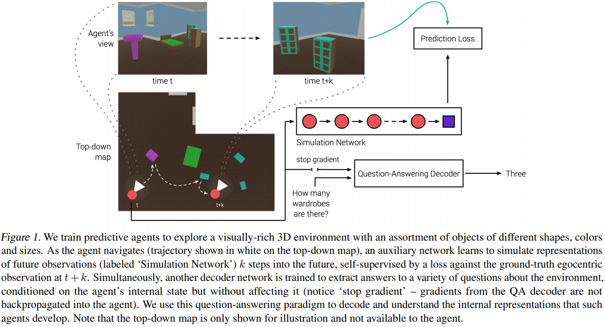

Language Grounded (3D environment) Question Answering. Agents optimize an exploration objective with/out self-supervised losses; only the latter reliably capture propositional knowledge in internal states (representations can be decoded as answers). Generative SimCore (pixel space), works for QA, contrastive CPC|A doesn’t. Gradient doesn’t propagate from question answers. Claim to corroborate Elman’s findings.
Our study is a small example of how language can be used as a channel to probe and understand what exactly agents can learn from their environments.

They query factual knowledge about the environment:
- shapes and colors (‘What shape is the
<color>object?’) - counting (‘How many
<color>objects are there?’) - spatial relations (‘What is the color of the
<X>near the<Y>?’) - exhaustive search (‘Is there a
<X>?’) - comparisons (‘Are there the same number of
<X>as<Y>?’)
Test set aims for compositional knowledge (unseen object combinations / colors).
Related work
Some buzzwords:
- Neural population decoding
- EmbodiedQA and grounded language learning
- Predictive modeling
Delta from EmbodiedQA:
Typical approaches to EmbodiedQA involve training agents to move for the goal of answering questions. In contrast, our focus is on learning a predictive model in a goal-agnostic exploration phase and using question-answering as a post-hoc testbed for evaluating the semantic knowledge that emerges in the agent’s representations from predicting the future.
Delta from other vision datasets:
Unlike the fully-observable setting in CLEVR, the agent does not get a global view of the environment, and must answer these questions from a sequence of partial egocentric observations.
Environment
The (now standard?) DeepMind L-shaped environment (see fig. 1); 50 different objects (shapes) x 10 colors; input is a 96 × 72 1st-person RGB.
Actions (cf. Table 5 for details):
- movements (move-{forward,back,left,right}),
- turns (turn-{up,down,left,right}),
- object pickup and manipulation (4 DoF: yaw, pitch, roll, and movement along the axis between the agent and object).
Model and reward
CNN to produce latent vectors; LSTM to produce actions; IMPALA to train. Exploration facilitated by rewarding the agent on approaching novel objects.
After visiting all objects, rewards are refreshed and available to be consumed by the agent again (i.e. re-visiting an object the agent has already been to will now again lead to a +1.0 reward), and this process continues for the duration of each episode (30 seconds or 900 steps).
The QA decoder is another LSTM initiated from action-LSTM’s hidden state. Trained via cross-entropy, gradients are not propagated to action-LSTM.
unrolled for a fixed number of computation steps after which it predicts a softmax distribution over the vocabulary of one-word answers.